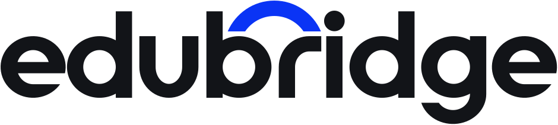

Брендбук · версия 1.0Сентябрь 2026

Международное образование начинается здесь
Educational Bridge — образовательная медиаплатформа о международном образовании, университетах и возможностях для студентовedubridge.media
Содержание
Содержание
01Бренд-платформа
05Графический язык
09Другие каналы
02Логотип
06Фотостиль
10Материалы для партнёров
03Цвет
07Tone of Voice
11Мерч
04Типографика
08Instagram
12Офлайн и ивенты
В конце — чек-лист соответствия публикации бренду
01
Бренд-платформа
Миссия, ценности, позиционирование, аудитория, архетип и нейминг
01 · Бренд-платформа
Миссия и видение
Миссия
Сделать международное образование понятным и достижимым для студентов из Казахстана и стран СНГ через честную информацию, проверенные данные и реальные истории.
Видение
Талантливый школьник из любого города региона имеет равный доступ к лучшим университетам мира и выбирает путь на основе фактов, а не слухов.
01 · Бренд-платформа
Ценности
1ЧестностьГоворим как есть: о стоимости, шансах, отказах и скрытых расходах.
2ПроверенностьКаждая цифра имеет источник и дату. Рейтинги, цены и дедлайны сверяем с сайтом вуза.
3ДоступностьОбъясняем сложное простым языком. Основной контент бесплатен для всех.
4Открытость мируИнтерес к странам, культурам и системам образования без снобизма и стереотипов.
5СообществоОпыт поступивших помогает следующим. Герои историй становятся наставниками.
01 · Бренд-платформа
Позиционирование
Для школьников, студентов и их родителей из Казахстана и СНГ Educational Bridge — независимое медиа о международном образовании. Мы даём проверенные факты и реальные истории, чтобы каждый мог сам построить путь в университет мечты.
edubridge · медиа
Агентство по поступлению
Цель
Информированное решение
Продажа пакета услуг
Доступ
Бесплатно и открыто
После оплаты
Выбор вузов
Любые, включая бесплатные
Из списка партнёров
Неудачи
Рассказываем открыто
Не упоминаются
Реклама
Всегда с пометкой «Партнёрский материал»
Смешана с советами
Голос
Студенты и приёмные комиссии
Менеджер по продажам
01 · Бренд-платформа
Бренд-обещание и слоганы
Обещание
Только проверенная информация и реальные истории, чтобы ты принял решение сам.
Verified facts and real stories, so you can make the call yourself.
Международное образование начинается здесьInternational education starts here
Халықаралық білім осы жерден басталады
Твой мост в мировой университетYour bridge to the world’s universities
Из Казахстана — в любой кампус мираFrom Kazakhstan to any campus on Earth
Проверено. Прожито. Рассказано.Verified. Lived. Told.
Мечтай по плануDream with a plan
Первая строка — основной слоган для сайта и шапок профилей. Остальные — для кампаний, мерча и рекламных креативов.
01 · Бренд-платформа
Персоны: абитуриент и магистрант
Айгерим, 17Школьница · Алматы
11 класс, хочет на Computer Science в США или Европе. IELTS 6.5, готовится к SAT.
МотивацииДоказать, что из Казахстана можно попасть в топ-вуз; жить в большом миреСтрахиНе хватит баллов и денег; пропустить дедлайн; не потянуть учёбуКаналыInstagram, Reels, Telegram-чатыЕй нужноЧек-листы, дедлайны, истории ровесников
«Мотивации мне хватает. Мне нужен понятный план и человек, который уже прошёл этот путь».
Данияр, 22Выпускник · Астана
Бакалавр-инженер, работает год. Цель — магистратура в Европе по Болашак, Erasmus+ или full funding.
МотивацииКарьера за рубежом, сильный диплом, учёба без долговСтрахиНе пройти по гранту, потерять год, отстать от сверстниковКаналыTelegram, YouTube-вебинары, emailЕму нужноБазы стипендий, разборы заявок, прямой контакт с вузами
«Я готов много работать, но не готов платить агентству за то, что могу сделать сам».
01 · Бренд-платформа
Персоны: родитель и партнёр
Гульнара, 46Мама · Караганда
Финансовый директор. Решает, куда и на какие деньги поедет сын, оплачивает обучение.
МотивацииБезопасность ребёнка, окупаемость вложений, признание дипломаСтрахиМошенники, скрытые платежи, ребёнок один в чужой странеКаналыInstagram, пересылки в WhatsApp, вебинарыЕй нужноПолная стоимость, безопасность, мнение приёмной комиссии
«Я поверю цифрам и живым людям, а не красивым обещаниям».
Sarah, 38B2B · Лондон
Recruitment Manager CIS & Central Asia в британском университете. Отвечает за набор из региона.
МотивацииМотивированные абитуриенты, узнаваемость вуза в регионеСтрахиНерелевантные охваты, репутация рядом с «серыми» агентамиКаналыEmail, LinkedIn, медиа-кит, созвоныЕй нужноПрозрачная статистика, отчёт по кампании, качественная подача
“I need access to motivated students and clear numbers, not just reach.”
01 · Бренд-платформа
Архетип: Мудрец с чертами Исследователя
Основной · 70%МудрецИстина, знание, проверенные данные. Основа доверия родителей и вузов и главное отличие от агентств: мы объясняем и не продаём.
Проявление: источники, даты, разборы, эксперты приёмных комиссий.
Вторичный · 30%ИсследовательСвобода, открытие мира, путь. Даёт бренду энергию и молодость, говорит на языке мечты подростка.
Проявление: страны, кампусы, города, путешествия, истории переезда.
Чем мы не являемсяНе Герой. Не давим «ты обязан поступить в Гарвард».Не Маг. Не обещаем «гарантированное поступление».Не Шут. Юмор уместен, но не за счёт фактов и не над неудачами.
01 · Бренд-платформа
Нейминг
Educational BridgeПолное названиеПервое упоминание в статьях, пресс-релизах, B2B, медиа-ките, юридических документах, титрах.Только латиницей, две заглавные. Не переводим и не склоняем: «в Educational Bridge», «команда Educational Bridge».
edubridgeКороткое названиеСоцсети, разговорные тексты, повторные упоминания, мерч.Всегда строчными и слитно, даже в начале предложения. Лучше перестроить фразу: «В edubridge мы…».Нельзя: EduBridge, Edu Bridge, EDUBRIDGE, Эдубридж
Сайтedubridge.media
Instagram@edubridge.media
Telegram@edubridge_media
YouTube@edubridge.media
Emailhello@ · partners@
Хэштег#edubridge
Рубрики#edubridge_stories #edubridge_guide #edubridge_webinar
Тематика#учебазарубежом #поступление #болашак
Раздел 02
02
Логотип
Конструкция, версии, охранное поле, размещение, ошибки и ко-брендинг
02 · Логотип
Конструкция и смысл
Вершина дуги
Основание дуги
Высота строчных
Базовая линия
ВордмаркГеометрический гротеск, строчные буквы: открыто и по-дружески. Круглые формы e, d, b, g и одинаковая толщина штриха держат спокойный ритм.
ДугаСегмент кольца над «br». Толщина дуги равна толщине штриха букв. Основание лежит чуть выше линии строчных, пролёт равен ширине «br».
СмыслДуга стоит над словом bridge: это мост между студентом и университетом, между Казахстаном и миром. Синий цвет выделяет момент перехода.
02 · Логотип
Версии логотипа
Основная · Ink + Bridge Blue
Инверсная на синем · всё белое
Инверсная на тёмном · дуга Bridge Light #5C7CFF
Монохромная · Ink #121418
Монохромная белая · тиснение, гравировка, фото
Знак-дуга · самостоятельный элемент
02 · Логотип
Аватар и фавикон
Основной аватар: круг Bridge Blue, белая дуга шириной 56% диаметра, центр по вертикали смещён на 2% вверх. Пунктир показывает зону безопасной обрезки: 80% диаметра.Светлая версия (белый круг, синяя дуга) используется только там, где соседние аватары синие.Исходники: Instagram 320, Telegram 640, YouTube 800 px, PNG и SVG.
Фавикон и иконка приложения: квадрат Bridge Blue со скруглением 23%, дуга 69% ширины.На 16 и 32 px толщина дуги увеличивается на 25%: отдельный файл favicon-16.svg, чтобы дуга не рассыпалась.Комплект: favicon.ico (16/32/48), apple-touch-icon 180, android 192/512, safari-pinned-tab.svg (монохром).
02 · Логотип
Охранное поле и минимальные размеры
X = высота строчной «e» (≈11% ширины логотипа). Охранное поле равно 1X со всех сторон. Внутри поля нет текста, краёв кадра и других логотипов.
Логотип · digital96 px
Логотип · печать25 ммДля тиснения и вышивки — 35 мм
Знак-дуга · digital24 px
Знак-дуга · печать6 ммЗначки и пины — от 15 мм
02 · Логотип
Размещение на фото и цветных фонах
светлое фото · небо, стена
тёмное фото · вечерний кампус
пёстрое фото · нужна подложка
На фото логотип ставим в спокойную зону в нижнем левом или верхнем левом углу, отступ 1X от края кадра. На Lime, Coral и Sky Tint — только основная или Ink-монохромная версия.
02 · Логотип
Недопустимое использование
Перекрашивать в другие цвета
Переносить или масштабировать дугу
EduBridge
Набирать другим шрифтомСтавить на низкий контраст
02 · Логотип
Ко-брендинг с университетами и партнёрами
edubridge × University of Edinburgh
Разделитель. Вертикальная линия 2 px, Mist #C9CDD6 или Sky на синем. Высота 1,5× высоты вордмарка, отступ до каждого логотипа 2X.
Баланс. Логотипы выравниваются по оптической массе, не по габаритам. Высота знака партнёра не больше 1,6× высоты нашего вордмарка.
Порядок. В каналах edubridge наш логотип слева. В материалах вуза следуем его гайдлайну.
Цвет. Оба логотипа в основной версии или оба в монохроме. На синем — оба белые.
Маркировка. Любая оплаченная публикация получает плашку «Партнёрский материал / Partner content».
В тексте. Знак «×» с пробелами: edubridge × KU Leuven.
Раздел 03
03
Цвет
Основная, вспомогательная и акцентная палитры, пропорции, контраст и рубрики
03 · Цвет
Основные цвета
Bridge Blue
HEX#0A34F5
RGB10 52 245
CMYK90 75 0 0
Pantone2728 C
Ink
HEX#121418
RGB18 20 24
CMYK75 65 55 85
PantoneBlack 6 C
03 · Цвет
Вспомогательная и акцентная палитра
Paper · фон#F5F5F1
RGB 245 245 241
CMYK 3 2 5 0
Pantone 663 C
Mist · линии#DCDFE6
RGB 220 223 230
CMYK 13 9 5 0
Cool Gray 1 C
Slate · вторичный текст#5B616E
RGB 91 97 110
CMYK 65 52 40 22
Pantone 431 C
Graphite · карточки#3B404A
RGB 59 64 74
CMYK 75 64 50 48
Pantone 432 C
Sky Tint · подложки#E6EBFF
RGB 230 235 255
CMYK 10 6 0 0
Pantone 7443 C
Sky · истории#9DB0FF
RGB 157 176 255
CMYK 40 28 0 0
Pantone 2716 C
Bridge Light · на тёмном#5C7CFF
RGB 92 124 255
CMYK 68 52 0 0
Pantone 2718 C
Coral · дедлайны#FF5A36
RGB 255 90 54
CMYK 0 78 82 0
Warm Red C
Coral Text · текст#D63B1A
RGB 214 59 26
CMYK 8 88 100 1
Pantone 7597 C
Lime · гранты#C8F169
RGB 200 241 105
CMYK 25 0 70 0
Pantone 373 C
03 · Цвет
Пропорции и контраст
40%White + Paper
25%Bridge Blue
20%Ink
10%Тинты
5%
Ink на белом18,4 : 1 · AAA
Белый на синем7,4 : 1 · AAA
Ink на Lime14,3 : 1 · AAA
Ink на Coral5,9 : 1 · AA
Bridge Light на Ink5,1 : 1 · AA
Синий на Sky Tint6,2 : 1 · AA
Синий на Ink2,5 : 1 · нельзя
Белый на Coral3,1 : 1 · нельзя
Минимум для текста — WCAG AA: 4,5:1, для заголовков от 36 px — 3:1. На Lime и Coral текст всегда Ink. Акценты не занимают больше 5% площади макета.
03 · Цвет
Цветовое кодирование рубрик
НовостиInk, белый текст
ДедлайнCoral, текст Ink. Только для сроков
УниверситетыBridge Blue, белый текст
ГрантыLime, текст Ink. Стипендии и финансирование
СтраныSky, текст Ink, флаг слева
ВебинарКонтур синий, в эфире — точка Coral
ИсторииSky Tint, синий текст
ГайдMist, текст Ink
ЦифрыPaper, контур Ink
Партнёрский материалКонтур Slate, всегда в верхнем углу
Плашка рубрики: высота 48 px на сайте, 64 px в соцсетях, скругление 999 px, Onest SemiBold. На одном макете — не больше двух плашек.
Раздел 04
04
Типографика
Шрифтовая пара с поддержкой казахского, иерархия и кегли по каналам
04 · Типографика
Шрифтовая пара: Unbounded и Onest
UnboundedАкцентный · 500, 600
Aa Әә
ә ғ қ ң ө ұ ү һ і
Обложки, заголовки постов, крупные цифры, мерч. Широкие округлые формы перекликаются с дугой. Не для текста длиннее 8 слов.
OnestОсновной · 400–800
Aa Әә
Шетелде оқу — нақты жоспар.
Учёба за рубежом — это план.
Studying abroad is a plan.
Заголовки H2–H4, текст, интерфейсы, подписи. Гибрид геометрического и гуманистического гротеска, полная поддержка казахской кириллицы.
Оба шрифта бесплатны (Google Fonts, SIL OFL). Альтернатива: Montserrat + Golos Text. Платная альтернатива для полиграфии: TT Norms Pro. Системный фолбэк: Arial.
04 · Типографика
Иерархия и кегли по каналам
Роль · шрифтInstagram 1080Сайт desktopСайт mobileПечать
H1 Unbounded 60088 / 9664 / 7036 / 4236 pt
H2 Onest 80072 / 8044 / 5030 / 3624 pt
H3 Onest 70056 / 6430 / 3824 / 3016 pt
H4 Onest 70040 / 4822 / 3020 / 2612 pt
Лид Onest 50040 / 5222 / 3219 / 2812 / 16 pt
Текст Onest 40032 / 4418 / 2816 / 249,5 / 14 pt
Подпись Onest 50026 / 3414 / 2013 / 187,5 pt
42% Цифры200–32096 / 9656 / 5660 pt
Кегль / интерлиньяж в px. Трекинг: Unbounded −3%, H2–H4 −2%, текст 0, плашки и надписи капсом +6%. Минимум в соцсетях — 26 px, чтобы читалось с телефона.
04 · Типографика
Цифры и правила набора
Гранты
100%покрытие обучения и проживания
Источник: сайт программы, 01.09.2026
Цифры. Табличные (font-variant-numeric: tabular-nums) в таблицах и сравнениях. Разряды через неразрывный пробел: 42 000.
Валюта. RU: 42 000 $, 38 000 €, 12 млн ₸. EN: $42,000. Всегда указываем валюту и год.
Даты и время. RU: 15 января 2027, 19:00 по Астане. EN: 15 January 2027, 7 pm Astana time (GMT+5).
Кавычки и тире. RU — «ёлочки» и длинное тире с пробелами. EN — “лапки”. Буква ё обязательна.
Заголовки. Без переносов и точки в конце, до 3 строк в посте. Висячие предлоги переносим неразрывным пробелом.
Капс. Только для плашек и надписей до 3 слов, с трекингом +6%.
Источник под каждой цифрой: подпись 24–26 px, Slate или 80% белого.
Раздел 05
05
Графический язык
Дуга-мост как система, сетки, иконки, флаги, инфографика
05 · Графический язык
Дуга как самостоятельный элемент
пролёт = 3 × высота
t = толщина штриха
Геометрия. Сегмент кольца с горизонтальным срезом. Пролёт к высоте — 3:1, толщина — 1/6 высоты. Пропорции неизменны при любом размере.
Цвета. Bridge Blue, белый, Ink, Lime. Одна дуга в макете может быть акцентной, остальные — в основном цвете.
Роли. Паттерн, рамка «арка» для фото, разделитель, маркер списка, счётчик шагов, мост между точками в таймлайне, анимация перехода.
Нельзя. Поворачивать, замыкать в круг, делать контурной, заливать градиентом, ставить больше трёх крупных дуг в кадре.
05 · Графический язык
Паттерны, рамки, разделители, маркеры
Паттерн «Пролёты»Сетка 4 колонки, шаг по вертикали = 1/2 пролёта. Одна дуга Lime на паттерн. Фон обложек, мерч, упаковка.
Рамка «Арка»Верх — полукруг радиусом 1/2 ширины. Для портретов героев, спикеров, фото кампусов.
РазделителиЛиния 3 px с дугой по центру — между разделами. Тонкая 2 px Mist — внутри статей и писем.
Выбери 5–8 вузов
Сдай IELTS
Напиши эссе
05 · Графический язык
Анимация «Переход»
0,9 с · буквы проявляются
Тайминг. 1,2 с целиком: рост дуги 0,6 с, проявление вордмарка 0,4 с, пауза 0,2 с. Easing cubic-bezier(0.65, 0, 0.35, 1).
Где. Интро и аутро Reels и YouTube, переход между слайдами Stories, загрузка сайта, смена кадров в титрах.
Вариант «перелёт». Точка движется по дуге из левого кадра в правый — переход между «до» и «после» в историях студентов.
05 · Графический язык
Модульная сетка для соцсетей
Пост 1080×1350. Поля 80 px, 6 колонок, гаттер 24 px, базовая сетка 8 px. Верхняя строка 64 px — плашка рубрики, нижняя 64 px — логотип и счётчик слайдов.
Пунктир Coral — обрезка до 3:4 в сетке профиля: по 34 px с каждой стороны. Важное держим внутри.
Stories и Reels 1080×1920. Сверху 250 px и снизу 340 px перекрывает интерфейс — там только фон.
Синий пунктир — зона обложки Reels в сетке: центральные 1080×1440.
Модули. Текстовый блок кратен 1, 2, 3 или 6 колонкам. Фото — на всю ширину или 4 колонки. Никаких элементов по диагонали.
05 · Графический язык
Иконки
Страны
Вузы
Гранты
Дедлайны
Вебинар
Виза
Язык
Документы
Стипендии
Экзамены
Переезд
Стоимость
Основа — Phosphor Icons (MIT, бесплатно), начертание Fill во всех каналах.
Сетка 24 px, залитые формы, скруглённые углы. Одноцветные: Bridge Blue, Ink или белый.
В рубриках иконка стоит в круге Sky Tint диаметром 1,8× иконки.
Свои иконки дорисовываем по тем же правилам: геометрия из окружностей и прямых, без мелких деталей.
Нельзя: смешивать с эмодзи, 3D и градиентами, использовать разные наборы в одном макете.
05 · Графический язык
Флаги стран и логотипы вузов
Карточка вуза 3:2, белая, скругление 20 px, обводка 2 px Mist. Логотип занимает 60% ширины и не выше 40% высоты.
Версия логотипа — официальная монохромная Ink. Если вуз её не разрешает — официальная цветная, только на белом.
В ряду все логотипы выравниваются по оптической высоте. Логотипы берём только с brand-страниц вузов или от самих партнёров.
Название вуза пишем по-английски в официальной форме: University of Cambridge, KU Leuven, NYU Shanghai.
05 · Графический язык
Инфографика
Сравнение стоимости, тыс. $ в год
ГерманияНидерландыВеликобританияСША
Иллюстративные данные для макета
1 из 4
Главная цифра — Unbounded, пояснение — одна строка Onest, источник обязателен.
Таймлайн поступления
Точки — этапы, дуги — переходы. Дедлайн подсвечен Coral.
Чек-лист
Сертификат IELTS 7.0+
Транскрипт с GPA
Personal statement
2 рекомендательных письма
Раздел 06
06
Фотостиль
Отбор, обработка, кадрирование портретов и кампусов
06 · Фотостиль
Критерии отбора
студентка в библиотеке,
естественный свет
ГероиРеальные студенты в реальной среде: аудитория, общежитие, кафе у кампуса. Живая эмоция, взгляд в камеру или в работу.кампус с людьми,
дневной свет
КампусыАрхитектура с людьми в кадре, повседневная жизнь. Фото от вуза-партнёра или героя, с разрешением на публикацию.улица города,
взгляд пешехода
ГородаГород глазами студента: транспорт, улицы, рынки. Уровень глаз, без дронов и открыточных панорам.
Приоритет источников: фото героя → фото вуза-партнёра → собственная съёмка → Unsplash с проверкой локации. Каждое фото подписано: кто, где, год.
06 · Фотостиль
Обработка и кадрирование
8–12% воздух
линия глаз · 1/3
зона текста 40%
кроп
в арку
Портрет 4:5. Глаза на верхней трети, над головой 8–12% кадра, лицо 35–40% высоты, плечи в кадре. Нижние 40% — под текст, градиент Ink 0→80%.
Арка. Поясной портрет, макушка на 10% ниже вершины арки.
Кампусы. Горизонт ровный, вертикали выпрямлены. Небо не больше трети кадра.
Цвет. Нейтральный баланс 5200–5600 K, контраст +5…+10, насыщенность −5…−10, тени +10. Без виньеток и HDR.
Дуотон Ink → Bridge Blue — только для фоновых фото под крупный текст.
Ретушь — только временные дефекты кожи. Черты лица, фигуру и фон не меняем.
06 · Фотостиль
Что недопустимо в фото
Стоковая постановкаВыпускники подбрасывают шапочки, деланные улыбки, белый фон.
Генерация под видом реальностиИИ-кампусы, «студенты» и города, выданные за реальные.
Чужие фото без разрешенияКадры из соцсетей героя или вуза без письменного согласия.
Тяжёлые фильтрыHDR, виньетки, кислотные пресеты, цветные засветы.
Персональные данные в кадреОфферы, паспорта, визы, транскрипты с читаемыми именами и номерами.
Низкое качествоМеньше 1080 px по короткой стороне, растянутые, со скриншотными рамками.
Раздел 07
07
Tone of Voice
Характер голоса, обращение, форматы, словарь, примеры и чувствительные темы
07 · Tone of Voice
Характер голоса
Мы вдохновляющие, но не приукрашиваемПоказываем мечту вместе с ценой: сколько стоит, сколько времени, сколько отказов было до оффера.
Мы экспертные, но не занудныеГоворим языком старшего друга, который уже поступил. Термины объясняем с первого раза.
Мы дружелюбные, но не панибратскиеТёплый тон без сленга ради сленга и без «приветики». Тот же текст должен быть уместен и перед родителем.
Мы честные, но не пугаемНазываем риски прямо и сразу даём план действий. Никакого «последний шанс» и «все провалятся».
Мы конкретные, но не сухиеДаты, суммы, баллы, ссылки — в каждом тексте. Цифры оживляем историей человека.
07 · Tone of Voice
Обращение: «ты» и «вы»
Школьники и студентытыInstagram, Telegram, Reels, молодёжные гайды на сайте. Так говорит старший друг: без дистанции, но с уважением.KZ: «сен» в Reels и Stories, «сіз» — в остальных форматах.
РодителивыРассылка для родителей, вебинары для семей, раздел «Родителям» на сайте. Уважение к тому, кто принимает решение и платит.Со строчной буквы. Больше фактов и цифр, меньше эмоций.
B2B-партнёрыВыМедиа-кит, коммерческие предложения, переписка с вузами. EN — деловой British English, без сокращений в первом письме.С прописной — только в личных письмах. В публичных материалах — «вы».
07 · Tone of Voice
Правила для форматов
ФорматГлавное правилоСтруктураОбъём
НовостиФакт в первой строке, источник и дата обязательныЧто случилось → кого касается → что делать1–5 слайдов, до 600 знаков
Истории студентовПуть с трудностями, голос героя, цифры с его согласияКто → откуда → куда → как → совет8–10 слайдов, до 1500 знаков
ГайдыКаждый шаг начинается с глагола, в конце чек-листОбложка → шаги → ошибки → чек-лист → CTA7–10 слайдов
Анонсы вебинаровКто, из какого вуза, когда по Астане, как попастьСпикер → 3 темы → дата → регистрацияЗа 7 дней, за 1 день, за 1 час
ДедлайныСпокойно и точно, без паники и восклицанийПрограмма → дата → осталось дней → что нужно1–3 слайда
ПартнёрскиеПометка в первой строке и на макете, без превосходных степенейПометка → вуз → программа → условия → ссылкаПо брифу, до 8 слайдов
07 · Tone of Voice
Словарь
Используемпоступление · заявка · шансы · стипендия · грант · полное финансирование · по данным вуза · проверено · план · шаг · дедлайн · оффер · реальная история
Избегаемгарантированное поступление · 100% · элитный · престижный без фактов · лучший вуз без рейтинга · халява · лёгкий способ · шок · успей · топчик · мечта сбудется
АнглицизмыIELTS, TOEFL, SAT, GPA, GRE — латиницей, без перевода и склонения: «сдать IELTS».Personal statement, motivation letter, offer — при первом упоминании поясняем: «personal statement (мотивационное эссе)».
Вузы и эмодзиВ данных и карточках — официально латиницей: University of Cambridge. В разговорном тексте можно «Кембридж», «Оксфорд», «Гарвард».Эмодзи — до 3 на пост, как маркеры пунктов, не в заголовке: 📍 🗓 ⏰ 🎓 ✅
07 · Tone of Voice
Правильно и неправильно · RU
НовостьШОК! Европейский вуз меняет правила, успей 😱KU Leuven открыл приём на магистратуру 2027/28. Сроки, требования и стоимость — в карточках.
История студентаАйдана смогла поступить в MIT! Ты тоже сможешь, если очень захочешь!Айдана трижды сдавала SAT и получила два отказа до письма из MIT. Рассказываем, что она изменила в заявке.
ГайдИдеальное эссе, которое на 100% понравится комиссииPersonal statement за 7 шагов: структура, частые ошибки и два реальных примера с разбором.
ВебинарНе пропустите!!! Супер-эфир с топовым вузом24 октября, 19:00 по Астане. Рекрутмент-менеджер McGill по СНГ — о стипендиях для иностранцев. Регистрация в шапке профиля.
ДедлайнСрочно! Последний шанс! Потом будет поздно!До дедлайна Chevening 14 дней. Проверь, всё ли готово: список документов — в карточках.
Партнёрский постЛучший университет Европы ждёт именно тебя!Партнёрский материал. University of Edinburgh — о магистратуре для студентов из Центральной Азии: условия, сроки, стоимость.
07 · Tone of Voice
Правильно и неправильно · EN
NewsBREAKING!!! Top uni changes everything 😱KU Leuven has opened applications for 2027/28 master’s programmes. Deadlines, requirements and fees inside.
Student storyAidana made it to MIT! You can too if you believe!Aidana took the SAT three times and got two rejections before MIT said yes. Here’s what she changed.
GuideThe perfect essay admissions will 100% loveYour personal statement in 7 steps: structure, common mistakes and two real examples with comments.
WebinarDon’t miss this AMAZING live with a top uni!!!24 October, 7 pm Astana time. McGill’s CIS recruitment manager on scholarships for international students. Link in bio.
DeadlineHURRY! Last chance! Don’t be late!14 days until the Chevening deadline. Check your documents against the list in the slides.
Partner postEurope’s best university is waiting for YOU!Partner content. University of Edinburgh on master’s study for Central Asian students: entry, dates, fees.
07 · Tone of Voice
Чувствительные темы
ОтказыГоворим «отказ», а не «провал». Даём контекст конкурса и следующий шаг. Историю отказа публикуем только с согласия героя.«Отказ MIT — итог конкурса, где принимают меньше 5% заявок, а не оценка тебя».
Неудачи и gap yearНе жалеем и не драматизируем. Показываем план Б: второй раунд, другая страна, gap year с пользой.«Год паузы — это время на IELTS 7.5 и новое эссе. Вот как его провели наши герои».
ФинансыПолная стоимость: обучение, жильё, виза, страховка, перелёт. Валюта вуза плюс тенге по курсу на дату. «Полное финансирование» — только если покрыты обучение и проживание.«Бесплатное обучение ≠ бесплатная жизнь: считаем бюджет на год».
Давление и сравнениеНе сравниваем героев между собой и не публикуем баллы без согласия. В темах выгорания и тревоги даём контакты поддержки.«Твой путь не обязан быть похож на чужой. Вот три разные дороги в UCL».
Раздел 08
08
Instagram
Лента, шаблоны постов по рубрикам, Stories, Reels, хайлайты, подписи
08 · Instagram
Концепция ленты
1 из 4
История
7 шагов
Кампус
24.10
«»
14 дней
Город
Новость
Гранты
McGill
История
Идея ленты — «доска вылетов». Каждый пост — отдельное направление: страна, вуз, история или срок. Лента читается как табло аэропорта: чётко, разнообразно, с понятной навигацией по цвету.
Ритм. В каждой тройке — один синий или тёмный пост, одно фото и один светлый. Цветные посты образуют диагонали, фото не стоят рядом.
Доля. 40% фото (истории, кампусы), 35% графика на синем и тёмном, 25% светлые текстовые. Coral и Lime — не чаще раза в 6 постов.
Рубрики. Две одинаковые рубрики подряд не ставим. Истории студентов — минимум раз в неделю.
Проверка. Перед публикацией смотрим, как пост встаёт в сетку, в превью 3:4 в Planoly или Later.
08 · Instagram · 1080×1350
Шаблоны: новость и история студента
Новости27.09.2026
KU Leuven открыл приём на магистратуру 2027/28
Источник: kuleuven.be
Истории1/9
Алия, 18 · Алматы → MIT
«Два отказа научили меня писать эссе»
Как ты готовилась к SAT во второй раз?
Я перестала решать всё подряд. Выписала 40 типов задач, где ошибалась, и каждый день разбирала по пять. За три месяца балл вырос на 170.
08 · Instagram · 1080×1350
Шаблоны: вуз, вебинар, дедлайны и гранты
Университеты
McGill UniversityМонреаль, Канада
Рейтинг QS#XX
IELTS6.5+
Обучение в годXX k CAD
Дедлайн15.01
Данные: mcgill.ca, 09.2026
Вебинар
Имя ФамилияRecruitment Manager CIS, McGill University
24 октября19:00 по Астане
Ссылка в шапке
ДедлайнГранты
Сроки ноября
04.11Chevening
15.11Early Decision, США
30.11Erasmus Mundus
01.12Болашак
Даты-примеры
08 · Instagram · 1080×1350
Шаблон: гайд-карусель на 7–10 слайдов
Гайд
Personal statement за 7 шагов
Листай →
1
Выпиши три момента, когда ты выбирал сам
Не достижения, а решения. Комиссии важно, как ты думаешь, а не сколько у тебя грамот.
Частые ошибки
× Пересказ резюме× Цитата великого человека в начале× Одно эссе для всех вузов× Больше 650 слов
Чек-лист
Есть личная история
Понятно, почему этот вуз
Прочитал кто-то ещё
Уложился в лимит
Сохрани, чтобы вернуться к гайду
@edubridge.media
08 · Instagram · 1080×1350
Шаблоны: цифры, сравнение, цитата, партнёр
Цифры
1 из 4студентов Erasmus+ впервые живут за границей
Данные-пример
Германия или Нидерланды


Обучение≈ 0 € + взнос
Обучение≈ XX 000 €
ЯзыкDE / EN
ЯзыкEN
«
Я поступила не потому, что была лучшей, а потому что была честной в эссе
Партнёрский материал
Магистратура в Эдинбурге для студентов из Центральной Азии
08 · Instagram · 1080×1920
Stories
Новый пост
Personal statement за 7 шагов
Смотри в ленте ↓
Куда хочешь поступать?
ЕвропаСША и Канада
Квиз
Какой балл IELTS нужен в UCL?
A · 6.0B · 6.5–7.5C · 8.5
До вебинара с McGill
2
дня
Напомнить
Новое на сайте
Сколько стоит год в Лёвене: считаем бюджет
Все элементы — между 250 px сверху и 340 px снизу. Интерактивные стикеры Instagram ставятся поверх макета в зоне кнопок-пилюль.
08 · Instagram · 1080×1920
Reels и обложки хайлайтов
ИсторииОдин день в NYU Shanghai
Алия · MIT
Я подала заявку в двенадцать вузов
Подписывайся: @edubridge.media
Хайлайты: круг Bridge Blue на весь кадр 1080×1920, белая иконка Phosphor Fill 400 px по центру.Субтитры: до 2 строк по 32 знака, нижний край плашки на 1450 px.Длина Reels: 20–45 с, хук в первые 2 секунды.
08 · Instagram
Шаблон подписи к посту
Айдана трижды сдавала SAT и получила два отказа, прежде чем MIT сказал «да».
В 17 лет она подавалась в 12 вузов США. Первый раунд закончился отказами, и она переписала эссе с нуля.
📍 Что она изменила в заявке — слайды 3–5
🎓 Как выбрала вузы второго раунда — слайд 6
✅ Её чек-лист — в конце карусели
Сохрани, если поступаешь в США в этом году. Вопросы Айдане — в комментариях, она ответит.
Источник: интервью edubridge, сентябрь 2026
#edubridge #edubridge_stories #поступлениевсша #учебазарубежом
1. ХукФакт или конфликт до 125 знаков — видно до «ещё».
2. Контекст1–2 абзаца по 2–3 строки. Кто, где, когда, сколько.
3. НавигацияДо 3 пунктов с эмодзи-маркерами: что на каких слайдах.
4. CTAОдно действие: сохрани, спроси, зарегистрируйся, перешли родителям.
5. ИсточникОткуда данные и на какую дату. Для партнёров — «Партнёрский материал» первой строкой.
6. Хэштеги3–5 в конце: бренд, рубрика, 1–3 темы. Вузы — через @, если есть аккаунт.
Раздел 09
09
Другие каналы
Telegram, YouTube, email, сайт, Zoom и презентации спикеров
09 · Другие каналы
Telegram
edubridge52 400 подписчиков
ДедлайнChevening: 14 дней
До дедлайна Chevening — 14 днейПриём заявок закрывается 4 ноября. Что нужно успеть: 4 эссе, 2 рекомендации, выбор трёх программ.Чек-лист документов →#дедлайн #гранты
Аватар. Основной круг Bridge Blue с белой дугой, 640×640.
Обложка поста 1280×720 (16:9), поля 64 px. Цвет фона — по рубрике, заголовок Unbounded до 2 строк, плашка рубрики слева сверху. Логотип не ставим: он уже в аватаре.
Текст поста. Первая строка жирная — это заголовок в превью. Дальше 2–3 абзаца до 3 строк. Ссылки вшиваем в слова со стрелкой «→». Хэштег рубрики — в конце.
Объём. До 1024 знаков для поста с обложкой, до 2000 — текстового. Длиннее — в статью на сайте.
Закреп. Навигация по рубрикам с хэштегами и ссылками на гайды, обновляем раз в квартал.
Реакции. Разрешены 👍 🔥 🎓 ❤️ 🤯 — без негативных.
09 · Другие каналы
YouTube
Вебинары и интервью
каждую неделю
ВебинарКак поступить в McGillс приёмной комиссией
ИнтервьюАлматы
→ MITАлия, 18 лет
Имя ФамилияAdmissions Officer, UCL
Заставка 3 с: синий фон, анимация «Переход», название рубрики. Конечная заставка 20 с: 2 окна видео справа, кнопка подписки, логотип слева.Названия видео: «Тема | Вуз | edubridge», до 60 знаков.
09 · Другие каналы
Email-рассылка
Выпуск №42 · 27 сентября
Осень дедлайнов: что подать до декабряСмотреть календарь
Дедлайны недели04.11 · Chevening
15.11 · Early Decision, США
30.11 · Erasmus Mundus
ИсторияИз Караганды в KU Leuven без агентстваЧитать →
Ширина 600 px, поля 32 px, фон Paper, модули — белые карточки со скруглением 20 px, отступ между модулями 16 px.
Шапка. Логотип 32 px в высоту слева, номер выпуска и дата справа, Onest 14 Slate.
Модули: главный материал на синем с кнопкой · дедлайны недели · история студента с аркой 140 px · анонс вебинара · цифра недели · партнёрский блок с пометкой · футер.
Шрифты в письме: Onest через Google Fonts, фолбэк Arial. Заголовки 28/34, текст 16/24, кнопка 16 Bold, высота 48 px.
Тема письма до 50 знаков, прехедер до 90. Без капса и восклицательных знаков.
Сегменты: школьники («ты»), магистранты («ты»), родители («вы»), партнёры (EN).
09 · Другие каналы · масштаб 150%
Сайт: ключевые UI-элементы
Зарегистрироваться
Все университеты
Читать гайд
 Великобритания
Нидерланды
Великобритания
Нидерланды
 США
США
Кнопки 56/48/40 px, скругление 999, Onest Bold 16. Hover: синий → #0829C4, контур → заливка Ink. Тег страны — выбранный заливается Sky.
McGill UniversityМонреаль, КанадаQS #XXIELTS 6.515 янв
Профиль вуза
Алматы → CornellКак я получил стипендию, не будучи отличникомЕрлан, 19 · 8 мин
09 · Другие каналы
Фон для Zoom и шаблон презентации
Zoom 1920×1080. Ink или Bridge Blue. Логотип справа сверху, дуга в левом нижнем углу, центр свободен для спикера (контур). Изображение не зеркалить: участники видят фон правильно.
Название вебинараИмя Фамилия · Должность, вуз Заголовок слайдаТезис 1
Тезис 2
Тезис 3
Вопросы?@edubridge.media · hello@edubridge.media
Шаблон для спикеров — 16:9, Google Slides и PowerPoint, 6 макетов: обложка с ко-брендингом, раздел, текст, цифра, фото, «Вопросы».
Шрифты: Unbounded для обложки и цифр, Onest для текста. Заголовок 60 pt, текст от 28 pt.
Спикер вуза может добавить свои слайды, но обложка и финальный слайд — всегда наши.
Лимит: до 20 слайдов на 40 минут, до 25 слов на слайд.
Раздел 10
10
Материалы для партнёров
Медиа-кит, ко-брендинговые публикации, презентация для университетов
10 · B2B
Медиа-кит
Media Kit 2026/27Reach motivated students in Kazakhstan and the CIS
50 000+подписчиков
5каналов
XX%аудитории 16–24
Структура, 12 страниц 16:9, PDF, EN + RU
01Обложка: паттерн «Пролёты», Unbounded02Кто мы: миссия, принцип «медиа, а не агентство»03Аудитория: 50 000+, гео, возраст, цели04Персоны: абитуриент, магистрант, родитель05Каналы и охваты по каждому06Форматы: пост, карусель, Reels, вебинар, рассылка, статья07Кейсы вузов: задача, формат, результат08Пакеты и цены09Правила: маркировка, фактчекинг, одобрение10Процесс и сроки, отчётность11Партнёры: логотипы вузов на белых карточках12Контакты: partners@edubridge.media
Одна идея на страницу, цифры — Unbounded 120+, данные обновляем раз в квартал с датой.
10 · B2B
Ко-брендинговые публикации и презентация для вузов
Шаблоны ко-брендинга
Партнёрский пост. Наш макет, плашка «Партнёрский материал», блок логотипов под плашкой. Цвета вуза не используем как фон — только логотип на белой карточке.
Совместный вебинар. Обложка Ink, в верхней строке — «edubridge × название вуза», спикер в арке. Та же связка в Zoom-фоне и на первом слайде.
Совместные Reels. Аутро с лок-апом логотипов 2 с, в подписи — отметка вуза через @ и Paid partnership.
Статья на сайте. Метка «Партнёрский материал» над заголовком, блок «О вузе» внизу, ссылки с UTM.
Согласование. Вуз проверяет факты, но не меняет тон и дизайн.
Презентация для университетов · 12 слайдов
1 · Обложка с лок-апом
2 · Задача вуза в регионе
3 · edubridge в цифрах
4 · Аудитория и персоны
5 · Медиа, а не агентство
6 · Форматы
7 · Кампания за 6 недель
8 · Кейс партнёра
9 · Отчётность и метрики
10 · Пакеты
11 · Следующие шаги
12 · Контакты
Язык — British English, версия на русском для вузов СНГ. Метрики в отчёте: охват, сохранения, регистрации на вебинар, переходы по UTM, заявки.
Раздел 11
11
Мерч
Коллекция «В пути»: вещи для тех, кто поступает, переезжает и учится
11 · Мерч
Концепция, худи и футболки
Мерч отмечает этапы пути: подал заявку, получил оффер, улетел. Большого логотипа на груди нет — узнаётся по дуге и коротким фразам. Это вещи, которые носят в кампусе, а не раздают на выставке.
Худи «Class of»Ink, оверсайз, 360 г/м². Спина: дуга Blue и «CLASS OF 20XX» шириной 28 см. Грудь слева: белая дуга 8 см.
передМечтай
по плану
Худи со слоганомBridge Blue. Слоган по центру груди, 24 см, белая вышивка. Рукав: edubridge.media, 1,5 см. Версии RU / EN / KZ.Футболка «Маршрут»Белая, 200 г/м². Дуга 10 см и маршрут под ней. Город меняется: Astana, Shymkent, Karaganda.
перед☑ IELTS☑ Essay☑ Offer☐ Flight
Футболка «Чек-лист»Paper. Чек-лист этапов слева на груди, 12 см, последний пункт синим. Сзади у ворота маленькая дуга.
11 · Мерч
Шопер, обложка для паспорта, багажная бирка
Из Казахстана — в любой кампус мира Если нашли — верните. Я лечу учиться. Багажная биркаСиликон 60×105 мм, Lime / Ink. Лицо: дуга и код аэропорта вылета ALA или NQZ, пустое поле для города назначения — пишут маркером.
11 · Мерч
Планер поступления, стикерпак, пины
Планер A5Твёрдая обложка с паттерном. Внутри: календарь на 18 месяцев, трекер 12 вузов, чек-листы документов, трекер баллов, черновики эссе, страница «Отказы и выводы».
Дедлайн — не приговор
Оффер получен
Эссе написано
 IELTS 7.5
Мечтай по плану
IELTS 7.5
Мечтай по плану
Стикерпак, 12 шт.Виниловые, с белой контурной вырубкой 3 мм, 50–80 мм. Дуги в 4 цветах, 4 флага, 4 фразы из словаря бренда. Лист A6 в конверте.Пины и значкиТвёрдая эмаль, никелевый кант, 25 мм. Дуга в 4 цветах, пин-арка «20XX» для выпуска. Пин Lime — только для получивших оффер.
11 · Мерч
Бутылка, кружка, ручки, бейджи и наборы
Бутылка. Сталь 500 мл, матовый Ink, дуга Blue 4 см под крышкой, на обороте «Stay on track».
Кружка. Белая керамика 330 мл, по кругу — таймлайн поступления: точки и дуги, дедлайн Coral. На дне — «Class of 20XX».
Ручки. Ink soft-touch, белая надпись edubridge.media, синяя дуга на клипсе.
Бейдж 90×130 мм: синяя шапка с логотипом, имя Onest 800 крупно, роль плашкой: Спикер — Lime, Команда — Blue, Партнёр — контур Slate, Участник — Sky Tint. Ланьярд 20 мм Bridge Blue, белый повтор дуги и edubridge.media.
Победителю конкурсаХуди «Class of», планер, стикерпак, обложка для паспорта, пин Lime. Коробка с паттерном и открыткой от команды.
Спикеру вебинараШопер, кружка, пин, открытка с отзывами зрителей и подписью команды. Доставка в страну спикера.
ПартнёруБутылка, планер, пин, печатный медиа-кит, отчёт о кампании. Коробка Ink с тиснением дуги.
Раздел 12
12
Офлайн и ивенты
Выставки и ярмарки вузов, деловая полиграфия, email-подпись
12 · Офлайн
Выставки и ярмарки вузов
Международное образование начинается здесь Твой мост в мировой университет
Баннер 3×2 мНад стендом или на сцене. Слоган не ниже 1,4 м от пола, логотип не меньше 60 см.Фотозона «Арка»Стенд 3×3 мЗадняя стена — Bridge Blue с паттерном, логотип 1,2 м по центру на 1,8 м от пола.Боковая стена — «Карта маршрутов»: круглые флаги и имена героев, поступивших в вузы.Стойка — белая, логотип и QR на сайт. Экран 55″ с нарезкой вебинаров.
Фотозона. Физическая арка высотой 2,4 м и шириной 1,8 м, фанера, окраска Bridge Blue, толщина дуги 30 см. На полу перед аркой — наклейка «Моя дорога начинается здесь». Хэштег #edubridge на табличке рядом.
Раздаточные материалы. Листовка A5: чек-лист поступления на обороте и QR на гайды. Открытка «Class of 20XX» для фото. Стикерпак мини. Карточка «Вопросы для приёмной комиссии» для родителей.
Команда на стенде — в синих худи и бейджах по ролям. Планшет с регистрацией в рассылку.
Печать: CMYK, 150 dpi для широкоформатной печати, 300 dpi для A5, вылеты 3 мм, 5 см для баннеров.
12 · Офлайн
Визитки, фирменный бланк, email-подпись
Имя ФамилияPartnerships Lead
+7 700 000 00 00
name@edubridge.media
A4, поля 20 мм. Логотип 40 мм слева сверху, разделитель с дугой, текст Onest 10/14 pt, реквизиты в футере 7,5 pt.
—
Имя ФамилияPartnerships Lead · Educational Bridge
+7 700 000 00 00 · Instagram · Telegram · YouTube
24.10 · Вебинар с McGill — регистрация
HTML-подпись: логотип PNG 2× шириной 120 px, имя 15 Bold, должность и контакты 13 Regular, Arial как фолбэк. Баннер-анонс опционален, одна строка, меняется раз в две недели.
Чек-лист
Как проверить, что публикация соответствует бренду
Логотип в утверждённой версии, с охранным полем и не меньше минимального размера
У каждой цифры есть источник и дата, стоимость — с валютой и годом
Цвета только из палитры, акценты Coral и Lime — не больше 5% площади
Даты и время вебинаров — по Астане, в формате бренда
Контраст текста не ниже WCAG AA, на Lime и Coral — только Ink
Нет слов из стоп-листа: «гарантия», «100%», «шок», «успей»
Шрифты только Unbounded и Onest, кегли по таблице иерархии
Обращение соответствует аудитории: «ты» — подросткам, «вы» — родителям и партнёрам
Плашка рубрики нужного цвета, на макете не больше двух плашек
Названия вузов — официальные, латиницей; англицизмы пояснены
Всё важное внутри безопасных зон: 3:4 в сетке, 250/340 px в Stories
Партнёрский материал помечен на макете и в первой строке подписи
Фото реальные, с разрешением героя и без персональных данных в кадре
В подписи: хук до 125 знаков, одно действие CTA, 3–5 хэштегов
Пост встаёт в ритм ленты: рядом нет той же рубрики и того же цвета
Брендбук · версия 1.0Сентябрь 2026
Международное образование начинается здесь
edubridge.mediahello@edubridge.mediapartners@edubridge.media@edubridge.media
 Бельгия
Бельгия
 Китай
Китай